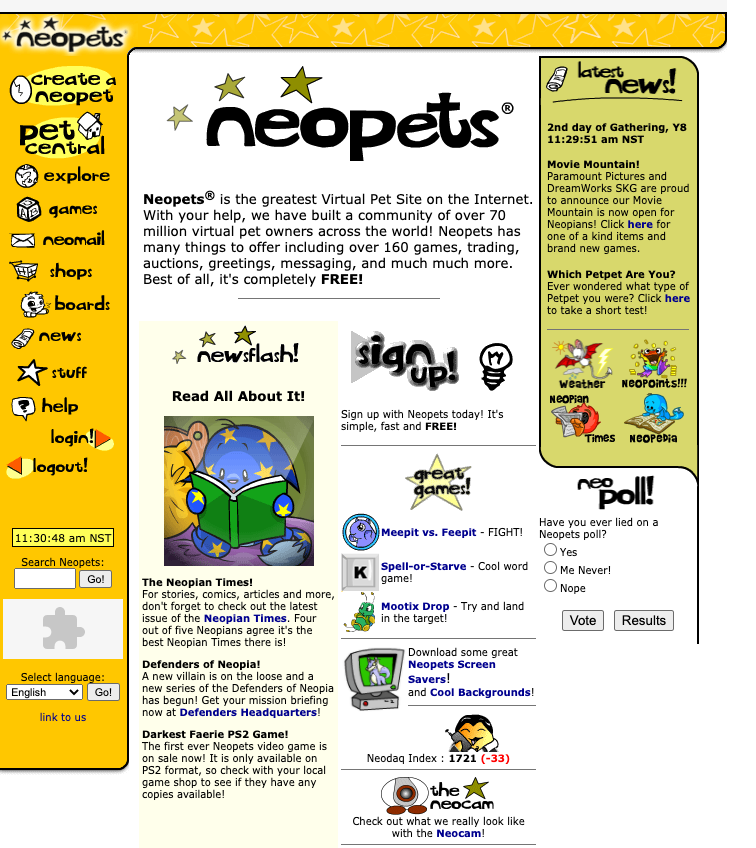
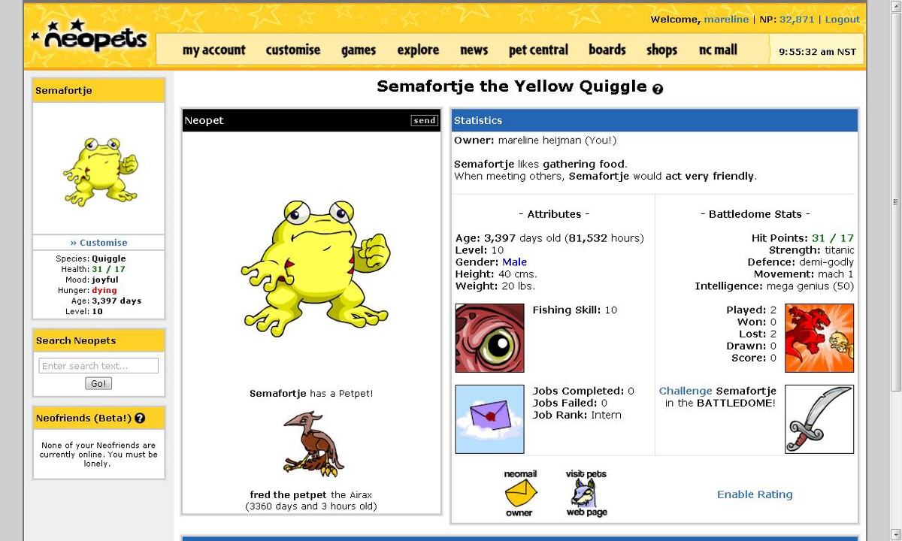
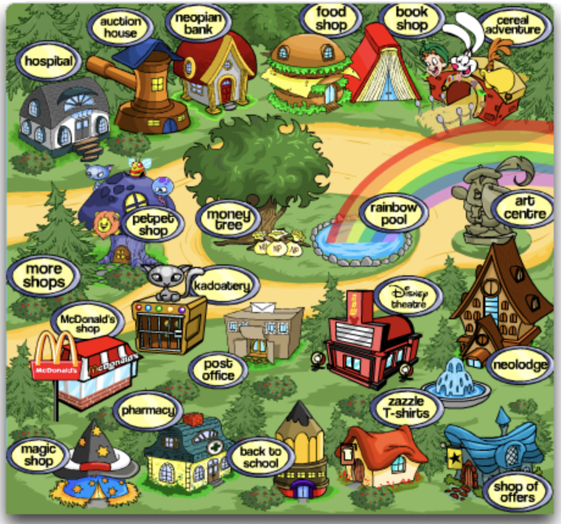
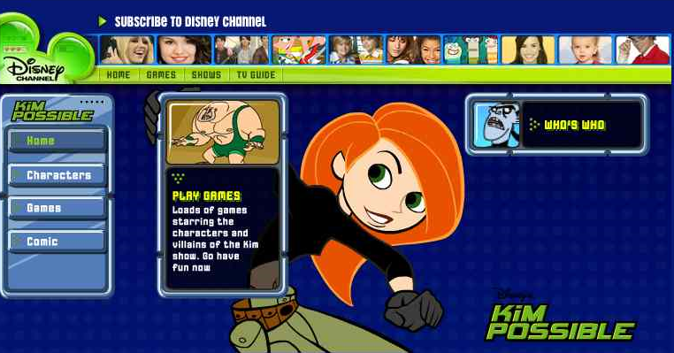
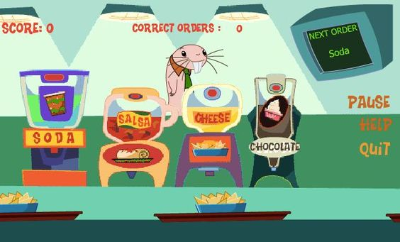
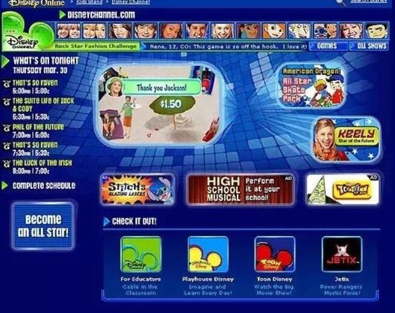

During the early 2000's, when the internet became something bigger, I was a young ten year old in 2005 experiencing Neopets for the first time. Neopets was first introduced in 1999 and became a fun and exciting game to play as a child, just as the internet was starting to take off. Neopets was a safe and child-friendly website where users could take care of pets and play games to collect coins. Looking back at the website now, the website is very basic but easy to understand and navigate through. Another website for younger kids to go on was the Disney Channel website which also featured fun games and brings back feelings of nostalgia.
     